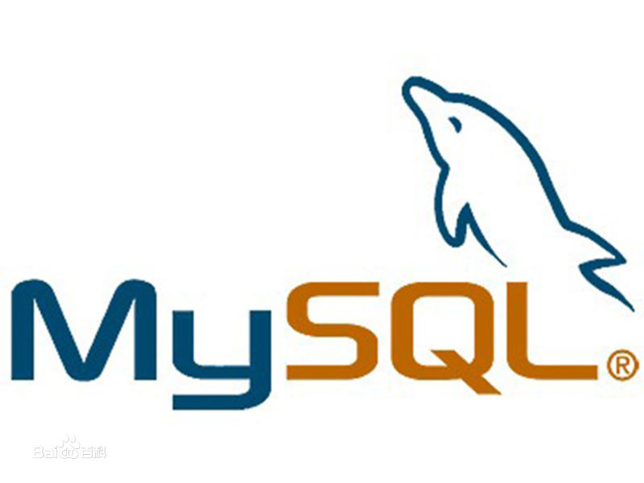
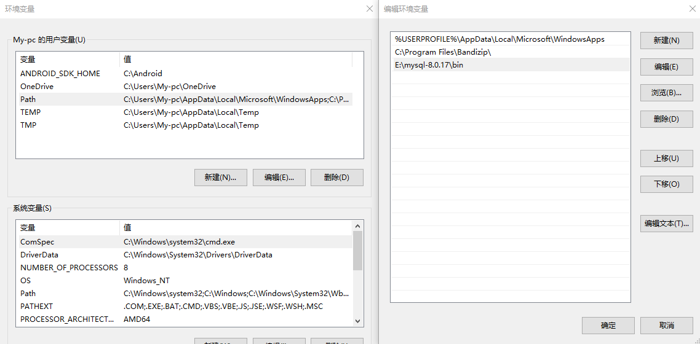

MySQL的基本概念
MySQL是一个关系型数据库管理系统，由瑞典MySQL AB 公司开发，目前属于 Oracle 旗下产品。MySQL 是最流行的关系型数据库管理系统之一，在 WEB 应用方面，MySQL是最好的 RDBMS (Relational Database Management System，关系数据库管理系统) 应用软件之一。
MySQL是一种关系数据库管理系统，关系数据库将数据保存在不同的表中，而不是将所有数据放在一个大仓库内，这样就增加了速度并提高了灵活性。
MySQL所使用的 SQL 语言是用于访问数据库的最常用标准化语言。MySQL 软件采用了双授权政策，分为社区版和商业版，由于其体积小、速度快、总体拥有成本低，尤其是开放源码这一特点，一般中小型网站的开发都选择 MySQL 作为网站数据库。
什么是SQL
SQL 是用于访问和处理数据库的标准的计算机语言。
在我的学习笔记中，将使用 SQL 访问和处理MySQL中的数据。
数据库在windows系统下的安装
所有平台的 MySQL 下载地址为： MySQL下载 。挑选你需要的 MySQL Community Server 版本及对应的平台。
现在以我自己在win10系统下安装MySQL为示例，介绍安装过程以及安装中遇到问题的解决：
下载完后，将 zip 包解压到相应的目录，这里我解压后的文件夹放在 E:\mysql-8.0.17 下。
接下来我们需要配置下 MySQL 的配置文件
打开刚刚解压的文件夹 E:\mysql-8.0.17 ，在该文件夹下创建 my.ini 配置文件，编辑 my.ini 配置以下基本信息：
[client] # 设置mysql客户端默认字符集 default-character-set=utf8 [mysqld] # 设置3306端口 port = 3306 # 设置mysql的安装目录 basedir=E:\\mysql-8.0.17 # 设置 mysql数据库的数据的存放目录，MySQL 8+ 不需要以下配置，系统自己生成即可，否则有可能报错 # datadir=E:\\mysql-8.0.17\\sqldata # 允许最大连接数 max_connections=20 # 服务端使用的字符集默认为8比特编码的latin1字符集 character-set-server=utf8 # 创建新表时将使用的默认存储引擎 default-storage-engine=INNODB
接下来将数据库bin文件增加windows系统环境变量中，以便于使用：
接下来我们启动MySQL数据库
以管理员身份运行cmd，并输入如下命令初始化数据库：
C:\Windows\system32>mysqld --initialize --console
...
2019-09-15T07:05:52.464644Z 5 [Note] [MY-010454] [Server] A temporary password is generated for root@localhost:?t>P0,2gGh!o
...
?t>P0,2gGh!o 就是初始密码，登录时需要用到
启动数据库服务：
C:\Windows\system32>net start mysql MySQL 服务正在启动 .... MySQL 服务已经启动成功。
若是无法启动数据库服务，则可能有两个原因：
1、没有以“管理员身份”运行cmd。
2、需手动修改注册表，如下图：